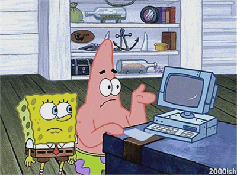
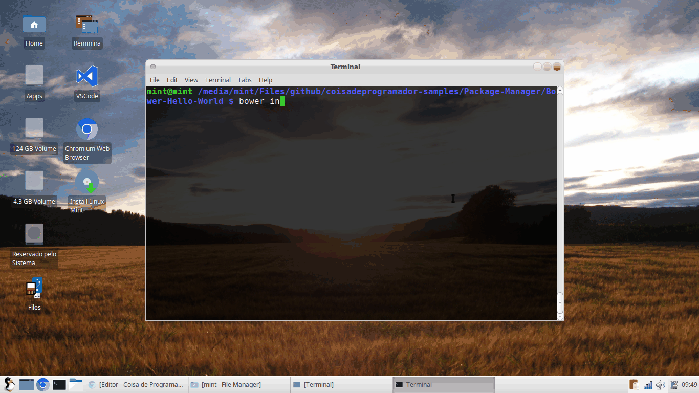
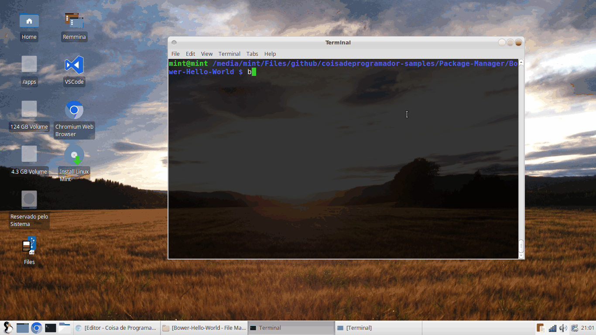
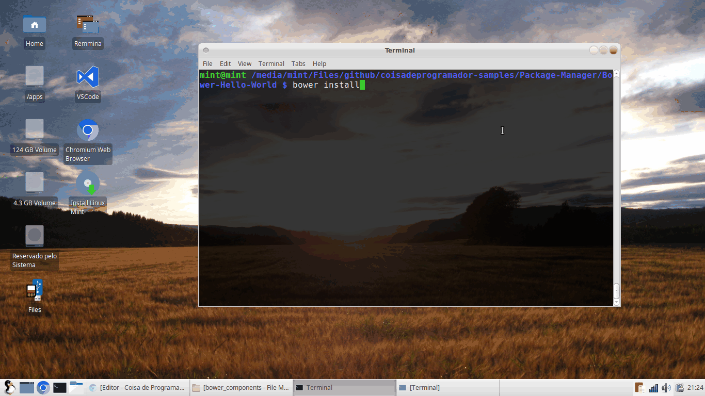

O que é um gerenciador de pacotes?
São responsáveis por garantir a disponibilidade de pacotes, estes pacotes podem ser recursos da web, como JavaScript, CSS, Imagens, Fontes, entre outros recursos. Possibilita também o controle de versão, onde você pode utilizar desde a versão mais recente ou específica.
O que é Bower?

O Bower além de todos os requisitos de gerenciador de pacote, tem seu diferencial no quesito dependências, pois alerta sobre possíveis incompatibilidades e sugere soluções para os problemas.
Utiliza como controle de versão dos pacotes o Git, um sistema de controle de versão difundido no mundo OpenSource, você já deve ter ouvido falar ou baixado algum projeto do GitHub :).
Vamos supor que você esteja utilizando o MVW AngularJs junto com algum módulo em específico (Angular Route ou Sanitize).
Caso você instale o Angular e após a instalação tente instalar uma versão específica de algum módulo, plugin ou framework dependente do angular, você será alertado sobre a incompatibilidade e poderá selecionar as opções:
- Retornar à versão específica do angular
- Baixar a versão mais recente do módulos
Requisitos
-Git
Hora do trabalho!

Primeiramente precisamos instalar o Bower de maneira global, abra sua linha de comando e digite o comando abaixo.
npm install -g bower
Pronto já instalamos o Bower, agora vamos criar um projeto com dependência do framework AngularJs e seus módulos.
- Crie uma pasta para o projeto
- Digite o comando abaixo para inicializar o Bower.
bower init

Será criado um arquivo de configuração bower.json, agora vamos instalar nossas dependências.
bower install angular --save-dev
bower install bootstrap --save-dev

O parâmetro --save-dev persiste as dependências no Bower.json.
Ok até o momento nenhum problema de dependência, vamos instalar uma versão específica do angular route, este cenário pode acontecer, caso existam problemas na versão mais recente, ou seja encontrado incompatibilidade com os navegadores ou até mesmo problemas de performance.
bower install angular-route#1.4.3 --save-dev

Será exibido uma caixa de opções, onde é possível escolher uma resolução do problema, no cenário acima a opção escolhida foi utilizar a versão mais recente do Angular o 1.4.4, desta forma podem ocorrer riscos de incompatibilidade, caso a segunda opção fosse escolhida, seria realizado um "Downgrade" no Angular que ficaria na versão 1.4.3.
Após a instalação o arquivo bower.json será atualizado com informações de dependência do projeto.
{
"name": "Bower-Hello-World",
"version": "0.0.0",
"homepage": "https://github.com/williampsena/coisadeprogramador-samples",
"moduleType": [
"node"
],
"license": "MIT",
"ignore": [
"**/.*",
"node_modules",
"bower_components",
"test",
"tests"
],
"devDependencies": {
"angular": "~1.4.4",
"angular-route": "1.4.3"
}
}
Os pacotes instalados encontram-se na pasta /bower_components/.
Como desinstalar um pacote ?
bower uninstall <nome do pacote>
Como buscar um pacote ?
Existem duas opções para buscar um pacote disponível no Bower.
-
Site: Bower Search
-
Linha de comando:
bower search <nomedopacote>
É possível restaurar os pacotes?
O Bower possibilita que a lista de pacotes seja restaurada, desde que estas informações estejam no Bower.json, digitando o comando:
bower install
IDE com integração ao Bower
- Atom
- Brackets
- Sublime
- Visual Studio 2013 (Plugin)
- Visual Studio 2015 (Nativo)
Código
Veja no GitHub
Conclusão
O Bower mostrou ser uma ferramenta madura para gerenciamento de pacotes web, então esqueça os velhos tempos onde era necessário baixar um ZIP ou preocupar-se com possíveis e inesperados problemas de dependência de pacote.
Obrigado!
Se você curtiu essa dica compartilhe, comente e deixe seu ponto vista!
Até a próxima!